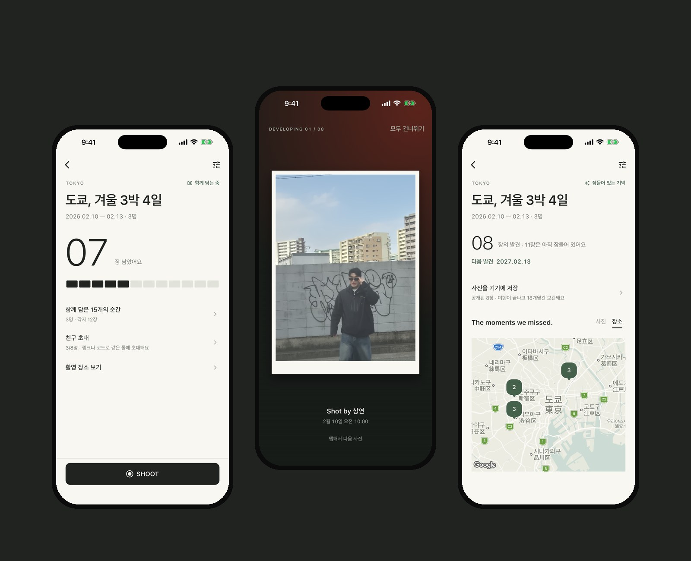
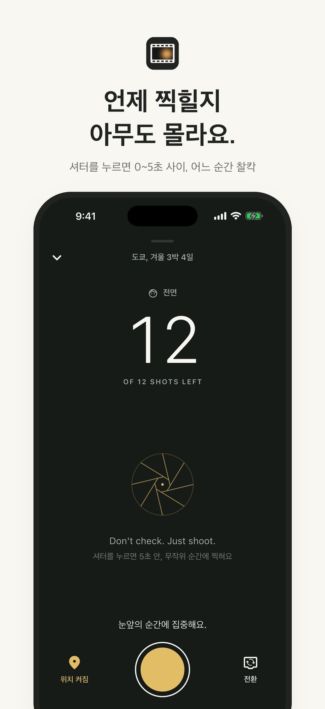
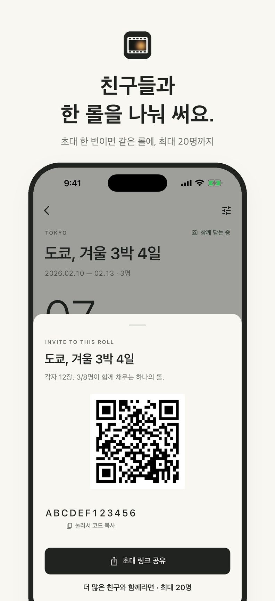
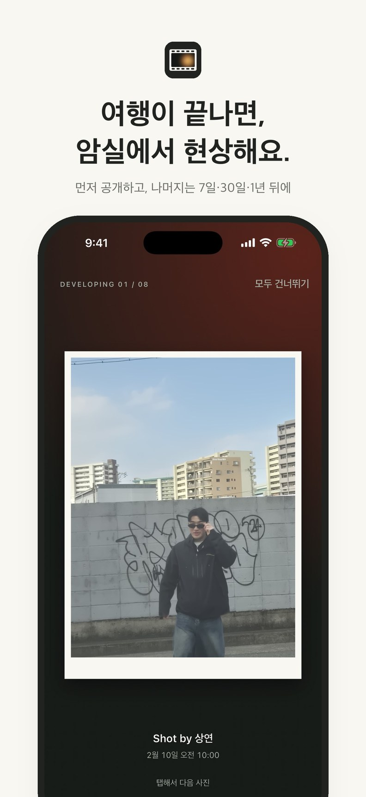
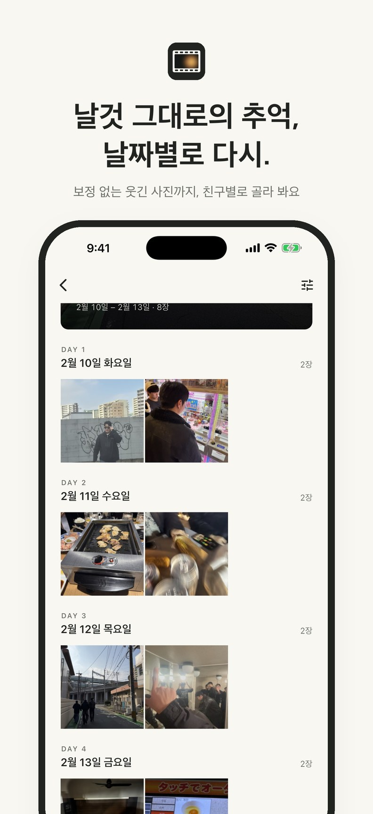
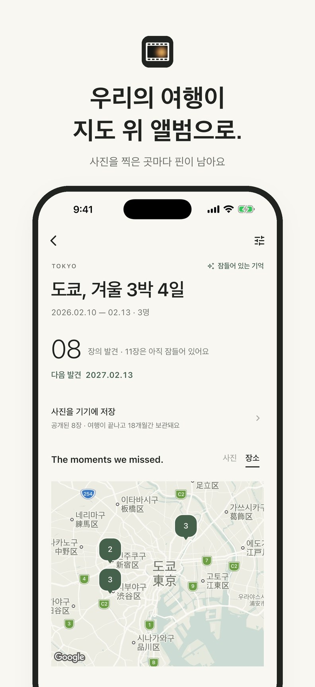

Product · Camera · Travel
Blind Trip
찍을 때는 순간만, 사진은 나중에.

결과를 확인하지 않으니,
지금 이 순간을 보게 됩니다.
Blind Trip은 친구들과 여행하며 함께 쓰는 필름 카메라 앱입니다. 찍은 사진은 그 자리에서 볼 수 없고, 여행이 끝나야 비로소 현상됩니다. 기획부터 디자인, 앱·서버 개발, 사업자 등록과 App Store 출시까지 혼자 맡았고, 현재 정식 배포 중입니다.
프로젝트 배경
여행을 가면 사진을 정말 많이 찍지만, 찍자마자 확인하고, 보정하고, 잘 나온 것만 남기다 보면 정작 그 순간은 화면 너머로 지나갑니다. 그런데 나중에 다시 보면 가장 재밌는 건 잘 나온 사진보다 예상하지 못한 웃긴 사진이었습니다.
그래서 일회용 필름 카메라처럼 결과를 볼 수 없게 만들고, 친구들이 한 롤을 나눠 찍은 뒤 여행이 끝나고 함께 꺼내 보는 경험을 앱으로 옮기고자 했습니다.
핵심 기능
- 미리보기 없는 카메라 — 셔터를 누르면 0~5초 사이 무작위 순간에 촬영
- 함께 쓰는 한 롤 — 초대 링크·코드로 참여, 인당 12장(Full Roll 24장). 기본 8명에서 선택 구매로 최대 20명까지
- 여행이 끝나면 암실에서 한 장씩 현상, 나머지는 7일·30일·1년 뒤 나누어 공개
- 날짜별·친구별 앨범과 기기 저장
- 사진을 찍은 곳이 핀으로 남는 여행 지도(위치는 원할 때만)
- 카카오·Google·Apple·이메일 로그인, 여행별 인앱 결제(Full Roll, 인원 늘리기)
내가 한 일
Flutter로 앱을(iOS 정식 출시, Android 준비 중), Firebase(인증·Firestore·Cloud Functions)로 서버를 만들었습니다. 사진은 공개일 전까지 누구도 볼 수 없어야 하므로, 공개 일정과 촬영 장수 확인을 모두 서버 시간 기준으로 처리해 기기 시계를 바꿔도 미리 볼 수 없게 했습니다. 촬영 전 장수 확인에는 서버 연결이 필요합니다. 촬영 후 업로드가 지연되면 사진은 기기에 보관했다가 연결이 복구되면 다시 전송합니다.
소자본 창업인 만큼 월 고정비가 0원인 구조를 목표로, 사진 저장소는 전송 비용이 없는 Cloudflare R2를 쓰고 서버는 사용한 만큼만 과금되도록 설계했습니다. 출시 전에는 AI 도구로 공격자 관점의 보안 점검을 반복하며 취약점을 보완했고, 앱 시작 시간을 6.9초에서 0.6초로 줄였습니다.
아이콘과 브랜드, 스토어 스크린샷과 소개 영상도 직접 만들었고, 사업자 등록부터 이용약관·개인정보처리방침, TestFlight 베타 테스트, App Store 정식 출시까지 필요한 과정을 하나씩 밟았습니다.
출시와 운영
친구들과 TestFlight 베타를 진행한 뒤 2026년 10월 20일 App Store에 정식 출시했습니다. 2026년 11월 9일 확인한 공개 버전은 1.0입니다.
첫 TestFlight 심사에서 반려된 뒤 아이콘 등 소개 자료를 다듬어 재제출했고 통과했습니다. 아이콘이 반려의 직접 원인이었는지는 확인되지 않았습니다. 출시 준비에서 얻은 경험을 실제 배포와 후속 개선으로 이어 갔습니다.
출시 후 개선
후속 소스에는 원본 사진을 바꾸지 않는 필름 느낌 보정과 날짜 스탬프, 처리 결과 캐시를 추가했습니다. 촬영 순간의 제약에서 나아가, 나중에 사진을 꺼내 보는 경험까지 같은 제품 방향으로 다듬는 작업입니다.
이 내용은 현재 App Store 공개 버전 1.0과 구분한 후속 개발 기록입니다.
프로젝트를 통해 배운 점
기능을 더하는 것보다 무엇을 보여주지 않을지 정하는 것이 더 어려운 설계라는 것을 배웠습니다. ‘보지 못하게 하는 것’이 이 서비스의 핵심 가치이기 때문에, 화면 문구 하나부터 서버 보안까지 그 약속이 깨지지 않도록 일관되게 설계해야 했습니다.
또한 앱을 만드는 일과 앱을 출시하는 일은 전혀 다른 일이었습니다. 사업자 등록, 약관, 결제, 심사, 반려 대응까지 직접 겪으며 서비스를 세상에 내놓는 전 과정을 이해하게 되었습니다.





